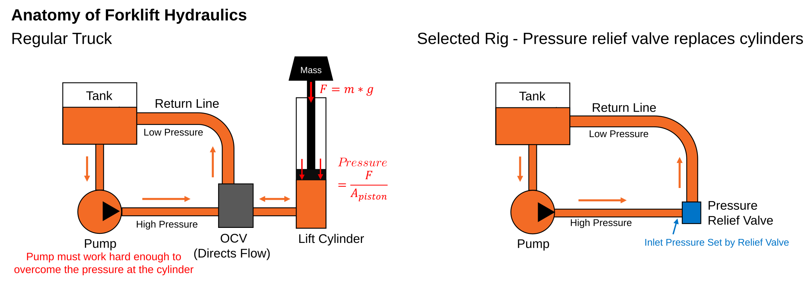
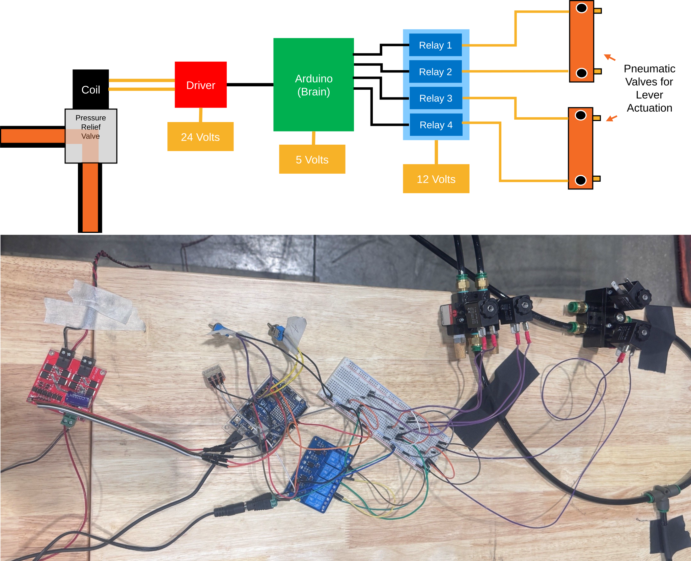
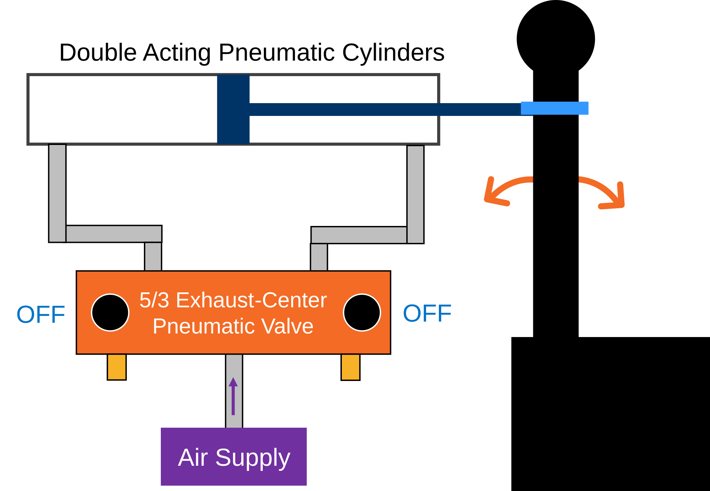
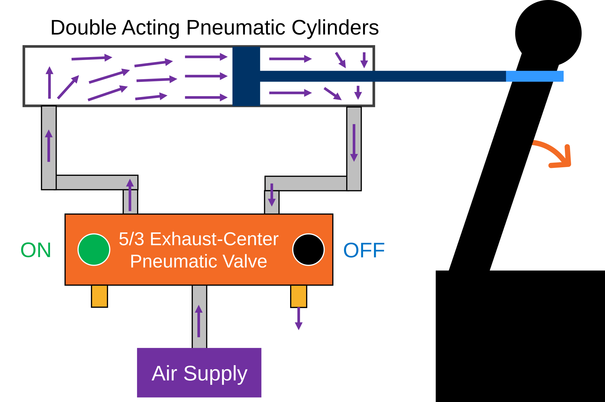
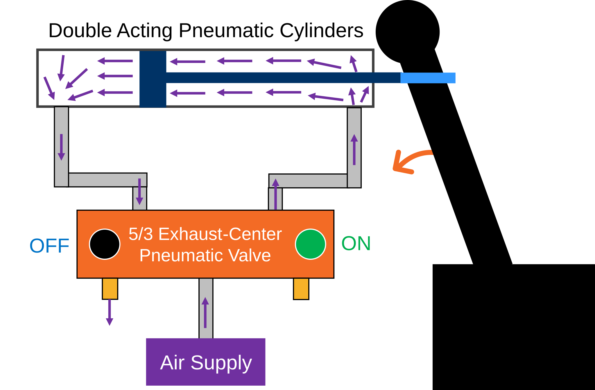
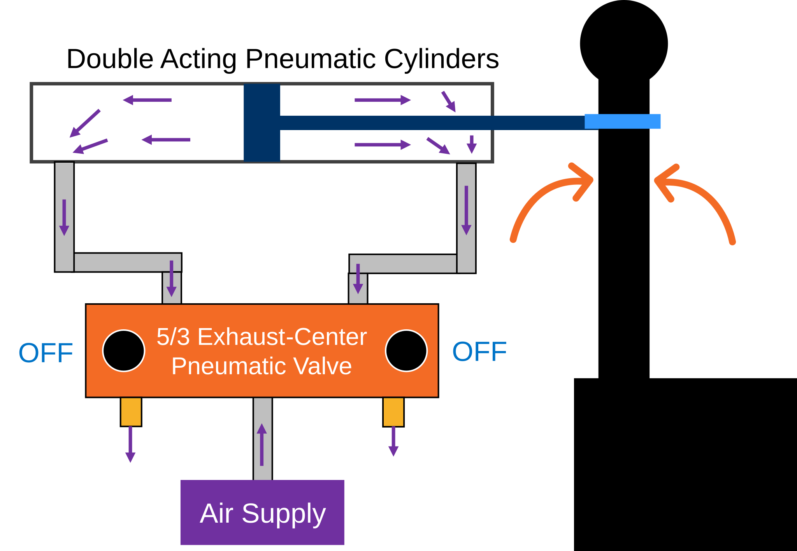
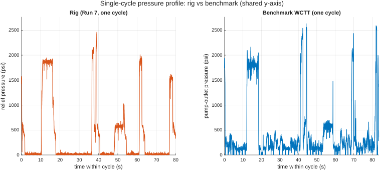
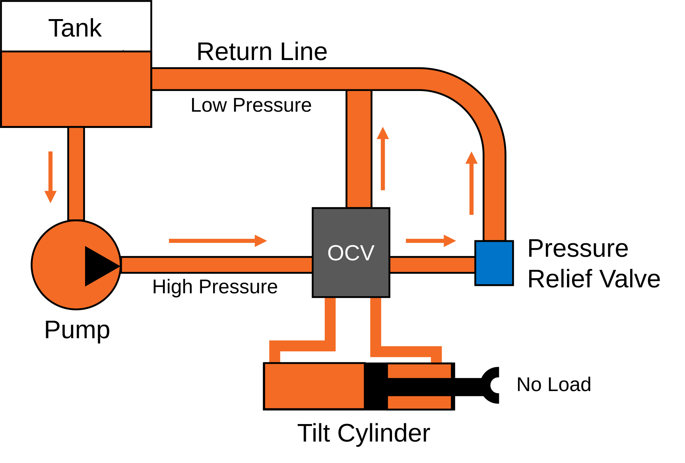
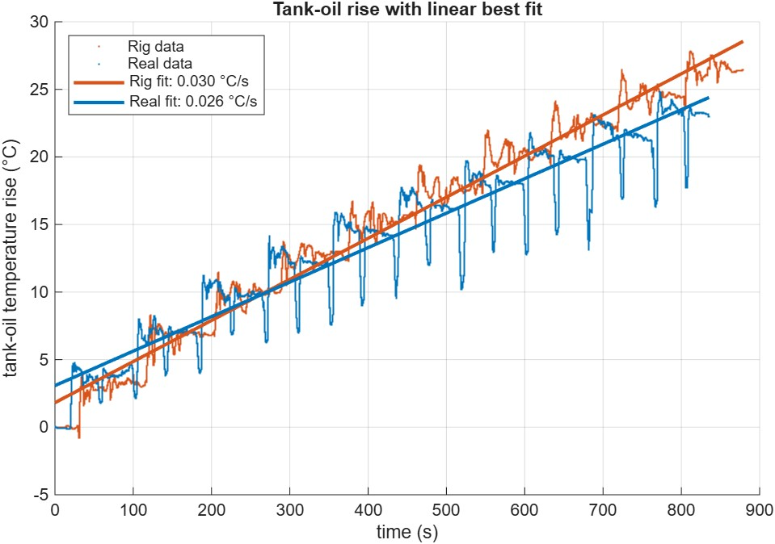

Toyota Material Handling's dyno can drive a forklift's powertrain but can't replicate the hydraulic load from lifting, tilting, and steering, load that's critical to how the truck heats up during a temperature test. I designed and built an automated rig to replicate that hydraulic heat load, replacing the mast's lift cylinders with a proportional pressure relief valve that lets the pump work against a controlled back-pressure instead of a real load.

I selected and procured the relief valve against pressure, flow, and temperature requirements, then built the control system around it: an Arduino driving the valve via PWM through an H-bridge driver, and pneumatic cylinders actuating the truck's lift and tilt levers through relay-switched solenoid valves.

Lever Actuation
To actuate the truck's lift and tilt levers without an operator present, I used double-acting pneumatic cylinders controlled through 5/3 exhaust-center pneumatic valves. Each valve has three states: neutral (both ports closed, cylinder holds position), extend (air routed to push the cylinder outward), and retract (air routed to pull it back), letting the Arduino command lever movement in either direction on command.




I mapped the PWM-to-pressure relationship experimentally to command accurate pressure setpoints in software, and validated the whole rig against real truck data.

The first iteration replaced too much of the hydraulic circuit, cutting out components that act as heat sinks, so the rig heated up nearly twice as fast as the real truck. I diagnosed the missing heat dissipation, reintegrated the tilt cylinders and oil control valve, and only isolated the lift function, cutting the temperature discrepancy from ~20°C to ~3°C over a 13-minute partial test while maintaining accurate pressure replication.
First Iteration

Second Iteration

